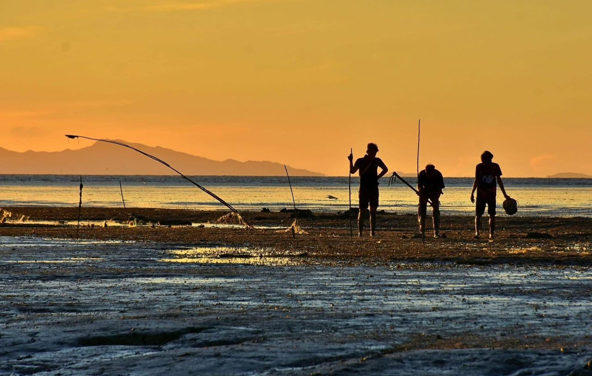
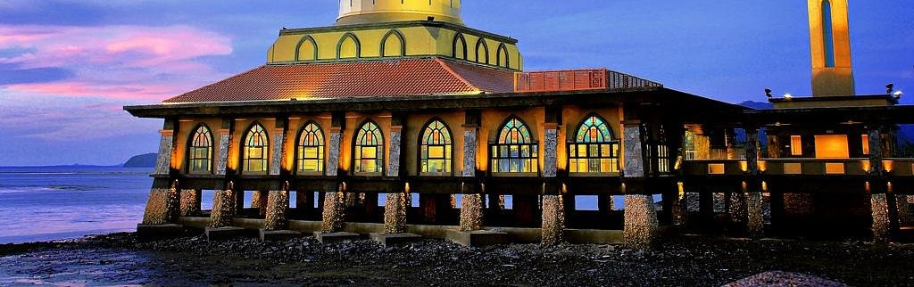

Best Places to Visit in Kuala Perlis

A peaceful seaside spot in Kuala Perlis, known for its beautiful sunset views, seafood stalls, and relaxing village atmosphere. This hidden gem offers a perfect escape from the city hustle, where you can enjoy fresh seafood while watching the sun dip below the horizon.

A mosque built near the beach with an interesting floating design. Dusk at this mosque is very beautiful and calm. The unique architecture creates a stunning reflection on the water during sunset hours, making it a perfect spot for photography and peaceful contemplation.

A nice seaside square to walk around, take pictures, see the sea view, especially in the evening and dusk. Perfect for sunset watching and enjoying the cool sea breeze. The square offers panoramic views of the Straits of Malacca and is a popular gathering spot for both locals and tourists.